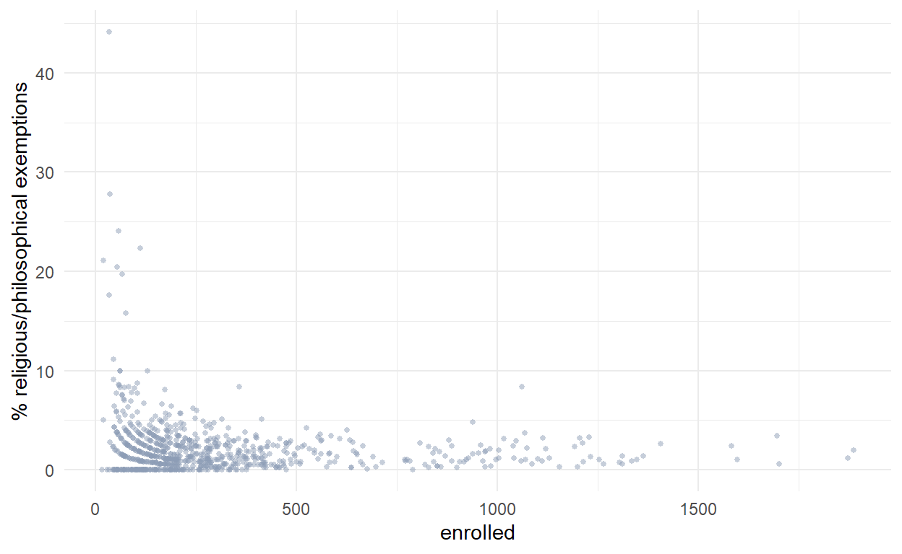

This is a summary of 2018-2019 immunization data from Toronto Public Health.
The data concerns vaccination coverage for diptheria,tetanus, polio (DTP) and measles, mumps, rubella (MMR). The data included here only covers the Greater Toronto Area for both public and Catholic schools.
For further details about the source data, please visit Toronto Public Health 2018-2019 Immunization Survey.
Let’s first lay out some questions to ask from the data.
- Is there a relationship between school size and vaccination coverage?
- Are there differences between the two vaccines in terms of coverage rates?
- What sort of schools have low vaccination rates and high exemption rates?
- How are schools with low coverage situated? Are they clustered or randomly located?
First, load the necessary R packages for the analysis
library(dplyr) # data manipulation package that's part of the tidyverse
library(ggplot2) # data visualization
library(patchwork)#adjust arrangement of plots
library(plotly) # generate interactive graphics for HTML documents
library(DT) # provides filtering, pagination, sorting, and many other features in the tables
There are two possibilities:
library(opendatatoronto)
package <- show_package("99ff3657-b2e7-4005-a6fd-c36838ccc96d") # get package
resources <- list_package_resources("99ff3657-b2e7-4005-a6fd-c36838ccc96d") # get all resources for this package
# identify datastore resources; by default, Toronto Open Data sets datastore resource format to CSV for
# non-geospatial and GeoJSON for geospatial resources
datastore_resources <- filter(resources, tolower(format) %in% c('csv', 'geojson'))
# load the first datastore resource as a sample
data <- filter(datastore_resources, row_number()==1) %>% get_resource()
glimpse(data)
Rows: 808
Columns: 9
$ `_id` <int> 1, 2, 3, 4, 5, 6, 7, 8...
$ `School Name` <chr> "A Y JACKSON SECONDARY...
$ `Enrolled population` <int> 1070, 110, 247, 66, 12...
$ `DTP coverage rate (%)` <dbl> 91.0, 88.2, 91.9, 71.2...
$ `DTP Religious exemption rate (%)` <dbl> 1.0, 1.8, 3.6, 19.7, 1...
$ `MMR coverage rate (%)` <dbl> 95.7, 90.0, 94.3, 72.7...
$ `MMR Religious exemption rate (%)` <dbl> 1.0, 1.8, 3.6, 19.7, 1...
$ Lat <dbl> 43.80526, 43.76242, 43...
$ Lng <dbl> -79.36656, -79.17977, ...
2. Some people have their data stored as Google Sheets, so using the R package googlesheets4 is a convenient, alternative way of loading your file.
library(googlesheets4)
#data<-read_sheet('googlesheet file location URL')
We have the following columns which are rather long. So I’ll rename them.
- id
- School name
- Enrolled population
- Percentage of students vaccinated for DTP
- Percentage of students with a religious exemption for DTP
- Percentage of students vaccinated for MMR
- Percentage of students with a religious exemption for DTP
- Location of school via latitude and longitude
data<-data %>% rename(school ="School Name",
enrolled = "Enrolled population",
dtp_pct= "DTP coverage rate (%)",
dtp_exempt ="DTP Religious exemption rate (%)",
mmr_pct = "MMR coverage rate (%)",
mmr_exempt = "MMR Religious exemption rate (%)",
lat= 'Lat',
lon= 'Lng')
Let’s first look at the overall student population in a total of 808 schools.
There are a total of 242769 students, and the most populous schools are:
# largest student population
large_schools <- data %>% arrange(desc(enrolled))
head(large_schools$school,12)
[1] "MICHAEL POWER/ST JOSEPH HIGH SCHOOL"
[2] "EARL HAIG SECONDARY SCHOOL"
[3] "MARC GARNEAU COLLEGIATE INSTITUTE"
[4] "NORTHERN SECONDARY SCHOOL"
[5] "NORTHVIEW HEIGHTS SECONDARY SCHOOL"
[6] "BISHOP ALLEN ACADEMY CATHOLIC SECONDARY SCHOOL"
[7] "WILLIAM LYON MACKENZIE COLLEGIATE INSTITUTE"
[8] "SENATOR O'CONNOR COLLEGE SCHOOL"
[9] "SIR WILFRID LAURIER COLLEGIATE INSTITUTE"
[10] "LESTER B PEARSON COLLEGIATE INSTITUTE"
[11] "NORTH TORONTO COLLEGIATE INSTITUTE"
[12] "ST JOHN PAUL II CATHOLIC SECONDARY SCHOOL" What about the smaller schools?
[1] "MONSIGNOR FRASER COLLEGE (ST. MARTIN)"
[2] "ALPHA II ALTERNATIVE SCHOOL"
[3] "NATIVE LEARNING CENTRE"
[4] "NORTH WEST YEAR ROUND ALTERNATIVE CENTRE"
[5] "BEACHES ALTERNATIVE JUNIOR SCHOOL"
[6] "DA VINCI SCHOOL"
[7] "MONSIGNOR FRASER COLLEGE (NORTHEAST)"
[8] "ALPHA ALTERNATIVE JUNIOR SCHOOL"
[9] "ETOBICOKE YEAR ROUND ALTERNATIVE CENTRE"
[10] "ECOLE ELEMENTAIRE MICHELINE-SAINT-CYR"
[11] "BANNOCKBURN SCHOOL"
[12] "MONSIGNOR FRASER COLLEGE (SOUTHWEST)"
Clearly, there is a disparity in terms of student enrollment. But does this difference in school size affect vaccination coverage?
Let’s look at the vaccination rates to see if there is an association between school size and vaccination rates.
The vaccination rates provided only relate to the DTP and MMR vaccines, and exclude medical exemptions. They also do not account for incomplete vaccine data (i.e students not yet at the appropriate age for receiving a particular vaccine).
Therefore, you may have noticed that the percentages do not add up to 100.
Here’s a summary for DTP coverage.
data %>% summarize(mean=mean(dtp_pct),
median=median(dtp_pct),
iqr=IQR(dtp_pct),
std=sd(dtp_pct),
se=sd(dtp_pct)/sqrt(808))
# A tibble: 1 x 5
mean median iqr std se
<dbl> <dbl> <dbl> <dbl> <dbl>
1 90.0 91 6.52 7.30 0.257The mean and median levels are similar, and the the interquartile range isn’t very large. This tells us that the overall vaccination coverage for DTP is high among most schools.
Plotting enrollment and DTP coverage together (with the median shown with the red dashed line).
You can browse over the points to identify the school.
Let’s look at MMR..
# A tibble: 1 x 5
mean median iqr std se
<dbl> <dbl> <dbl> <dbl> <dbl>
1 92.7 93.6 4.83 4.97 0.175Again, we see similar statistics as with DTP.
Here’s a plot of the relationship between school enrollment and MMR coverage.
Again, if you browse over the data points, you can see the specific schools.
If you like to see both graphs side-by-side, use the package patchwork.
library(patchwork)
enrl_dtp + enrl_mmr & scale_y_continuous(limits = c(20, 100))
Vaccination rates to confer herd immunity in a population are dependent on infectiousness of a particular disease. For example, in measles (covered through MMR) it is expected to be over 92%, and Diptheria (through DTP) it is over 83%.
Looking at the Toronto vaccination coverage, there are some schools (outliers) with very low coverage rates for both vaccines.
If a distribution is heavily skewed (i.e. not normal and with outliers), it is generally not advisable to pick the mean as a summary statistic. In this case the mean is close to the median, but I still prefer to use the median values as a measure of central tendency because of the presence outliers.
We see similar distributions for both vaccines, with most schools having a coverage rate of over 80%. The median coverage rate for MMR is slightly larger than for DTP (93.6 vs 91 %), with a larger spread of data for DTP. But this may be due to incomplete vaccination records based on the age of the student (the 2nd dose of MMR vaccines are given after the age of 48 months, which is after the starting age for Junior Kindergarten).
So answer the question “Is there a relationship between school size and vaccination coverage?”
There isn’t a defined relationship between school size and vaccination coverage, but clearly the schools with low coverage are smaller schools.
Let’s look at the schools that have lower vaccination rates for both vaccines. The graph below flips the axes so you can get an idea of the high coverage rates.
First DTP.
# A tibble: 1 x 1
med
<dbl>
1 91AS you can see, the distribution is heavily skewed to the left with most schools over 80% coverage and a median of 91%.
If we pick the schools with DTP coverage rate less than the overall median value, we can get a closer look at which schools have not only low vaccination rates, but also relatively high rates of religious exemptions. I picked the first quartile(Q1) as the cutoff (i.e containing the lowest 25% of the population).
In the case of DTP, this is a coverage rate of 87.8%.
quantile(data$dtp_pct)
0% 25% 50% 75% 100%
26.700 87.800 91.000 94.325 100.000 There are 200 schools out of the total of 808 (24.8%) with DTP coverage less than the first quartile (87.8%).
If we look at the enrollment data for only these schools…
Most of these schools, especially the ones with less that a 70% coverage rate, have less than 250 students.
A similar approach can be taken for the MMR vaccine.
# A tibble: 1 x 1
med
<dbl>
1 93.6Similarly, MMR coverage is also heavily skewed to the left with a median of approximately 94%. So if we pick a similar cut-off of Q1…
quantile(data$mmr_pct)
0% 25% 50% 75% 100%
51.700 90.975 93.600 95.800 100.000 low_vac <- data %>% filter(mmr_pct <90.975) #filter for vaccination rate less than 93.6%
low_vac
# A tibble: 202 x 9
`_id` school enrolled dtp_pct dtp_exempt mmr_pct mmr_exempt lat
<int> <chr> <int> <dbl> <dbl> <dbl> <dbl> <dbl>
1 2 ACADE~ 110 88.2 1.8 90 1.8 43.8
2 4 AFRIC~ 66 71.2 19.7 72.7 19.7 43.7
3 15 ALPHA~ 36 69.4 27.8 69.4 27.8 43.6
4 16 ALPHA~ 19 57.9 21.1 68.4 21.1 43.7
5 32 BANNO~ 43 79.1 2.3 90.7 2.3 43.7
6 34 BAYCR~ 61 91.8 4.9 90.2 4.9 43.7
7 35 BAYVI~ 453 90.3 0.4 90.3 0.4 43.8
8 36 BEACH~ 34 82.4 17.6 82.4 17.6 43.7
9 39 BELLM~ 193 89.1 1 88.1 1 43.8
10 40 BEN H~ 45 84.4 11.1 84.4 11.1 43.8
# ... with 192 more rows, and 1 more variable: lon <dbl>There are 202 schools out of a total of 808 (25%) with MMR coverage rates less than the Q1 level.
The data provided by Toronto Public Health identifies religious exemptions for each of these vaccines. Let’s get a summary of that data for each vaccine.
Looking at the raw data, the exemption rate is exactly the same for both vaccines, so we can conclude that those who applied for exemptions did so for both.
dtp_exempt_summary<-data %>% summarize(mean=mean(dtp_exempt),
median=median(dtp_exempt),
iqr=IQR(dtp_exempt),
std=sd(dtp_exempt),
se=sd(dtp_exempt)/sqrt(808))
dtp_exempt_summary
# A tibble: 1 x 5
mean median iqr std se
<dbl> <dbl> <dbl> <dbl> <dbl>
1 2.11 1.4 2.13 3.04 0.107The religious exemption rate is quite low overall. If we look at a histogram of the data, it is very clear that most schools have a rate less than 5%.
What is clearly surprising is there are a couple of schools even over 5% of the population reporting religious exemptions for both vaccines. These schools are overwhelmingly smaller schools.

Let’s find out what schools have an exemption rate of over 5%.
It is clear from both the vaccination and exemption rates, the 55 schools with religious exemption rates are small, specialized schools (except Rosedale Heights School of the Arts) with under 500 students.
What differentiates these schools with low vaccination coverage rates? The observations above point to them being smaller, specialized schools. Does location have anything to do with it?
In order to spatially and interactively view the schools, I am using a simple method: The leaflet package is R package that enables users to control leaflet maps, which are an open-source, javascript library for generating interactive maps.
dtp_exempt_plot<- leaflet(options = leafletOptions(minZoom = 0, maxZoom = 15)) %>%
addTiles() %>%
addMarkers(lng= dtp_exempt_table$lon, lat=dtp_exempt_table$lat, popup=dtp_exempt_table$school,dtp_exempt$dtp_exempt)
dtp_exempt_plot
Clearly the schools are dispersed randomly and in both densely populated and suburban areas.
The take-away from this investigation is that the smaller schools are heavily concentrated with students who have religious exemptions for the two main childhood vaccines, DTP and MMR.
If these schools are outliers compared to the larger schools, how can we explain the extremely low exemption rates in large school. The low coverage schools are not advertised as dedicated for individuals with exemptions for vaccines so there are many questions that can be further investigated:
- Do these schools function as schools solely dedicated for those families who chose not to vaccinate their children?
- If not, why is there a disparity compared to larger schools?
- Is there a selection process for students to attend?
- Is the selection process impartial, or biased towards families seeking medical or religious exemptions?
- Do students with medical or religious exemptions congregate in particular schools for another reason?